Resource manager
Open Modules > Tools > Resource Management to browse and maintain the resources exposed by the installation. Upload or replace the intended file, then verify the documents that use it. Check the target tenant and resource location before removing shared content.
Important
Enterprise Edition only
The Knowage Community Edition only allows the management of the models folder, in order to define metadata for data mining analysis. The Knowage Enterprise Edition allows the management of all the Knowage installation resources.
The Resource Manager functionality available under the TOOLS section of the Knowage main menu, allows the management of all files within the Resources folder of the Knowage installation.
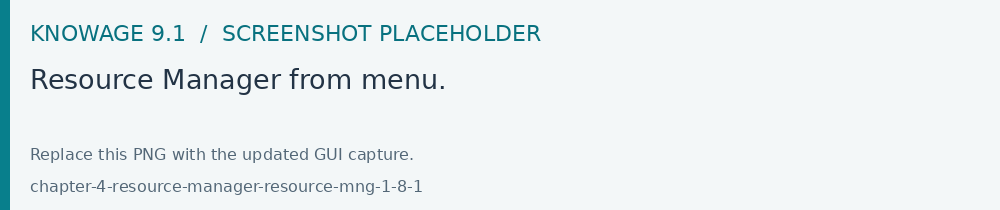
Fig. 691 Resource Manager from menu.
By default, the system shows the files starting from the root directory:
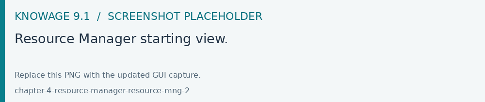
Fig. 692 Resource Manager starting view.
Resource Manager functionalities
The Resource Manager window diplays two sections: on the left the tree structure representing the existing resource system; on the right the details of the selected folder.
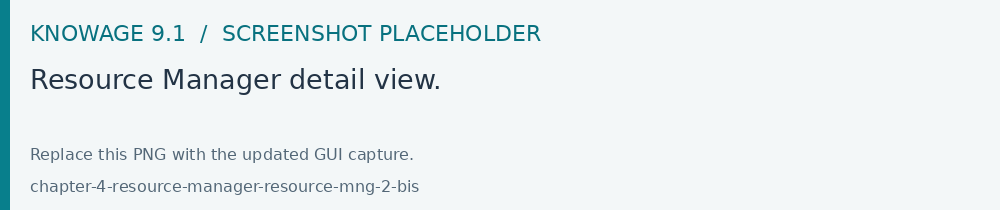
Fig. 693 Resource Manager detail view.
Tree functionalities
The tree shows exactly the phisical structure of the file system from the resources folder. The top bar contains two funcionalities: Refresh tree and Create new folder:
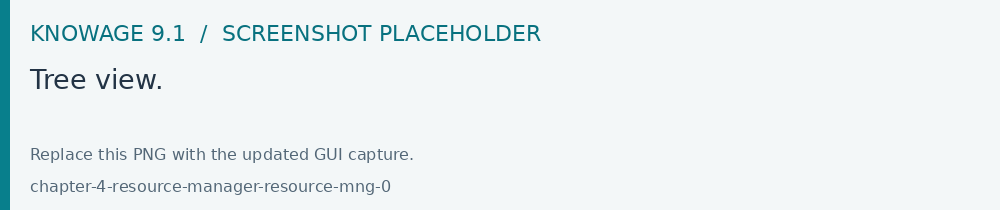
Fig. 694 Tree view.
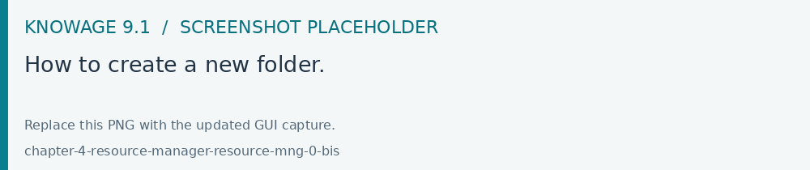
Fig. 695 How to create a new folder.
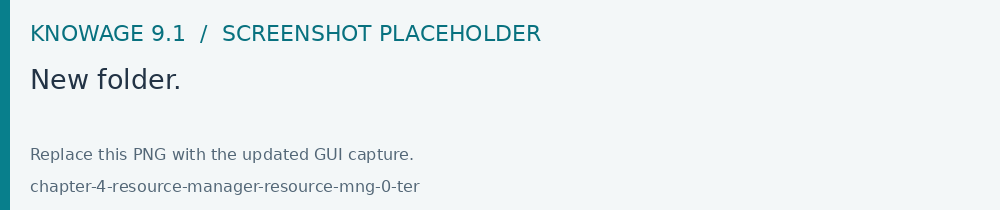
Fig. 696 New folder.
The new folder will be created under the selected folder of the tree ( in this case, ‘KNOWAGE-5058’).
By clicking on the Download icon of a specific folder, you can download all files contained:
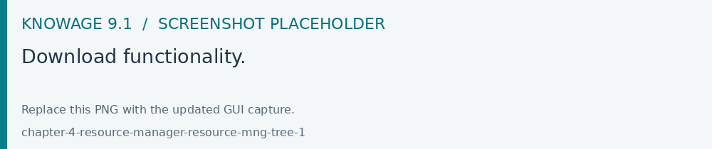
Fig. 697 Download functionality.
A zip file with the contents of the selected folder will be produced as a result of the download process.
By clicking the Delete icon of a specific folder, the folder can be fisically removed from the Knowage server after a confirmation message. Please remember that the deletion of a folder is an irrecoverable operation.
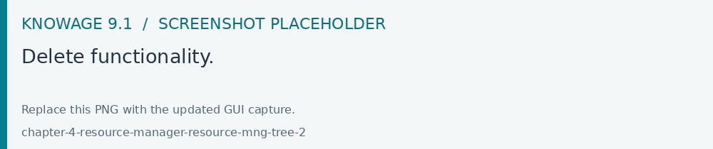
Fig. 698 Delete functionality.
Detail panel
When a folder is selected, the right panel shows the properties Name, Size and Last Modified Date of all contained files.
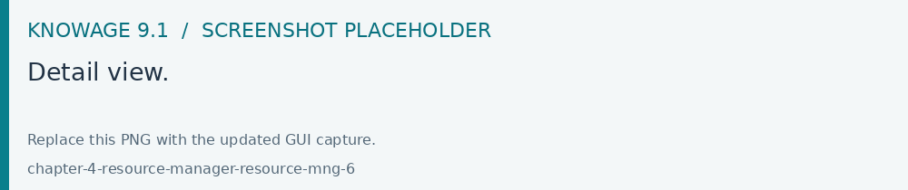
Fig. 699 Detail view.
All items are selectable for downloading or removal trough specific icons of the toolbar.
An Upload functionality is also available through a dedicated icon.
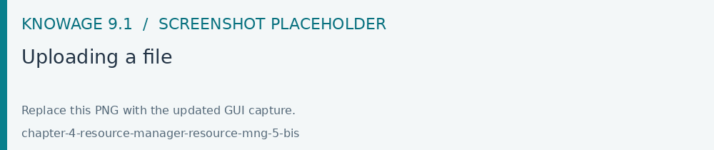
Fig. 700 Uploading a file
In case of a zipped file want to be uploaded, it is possible to keep the file zipped.
It is also possible to unzip the file to upload by enabling the Extract Files option as shown in the above image.
Model Metadata Definition
As already told at the beginning, models is the unique folder managed by both the Community and the Enterprise Edition. It contains all the data-mining models usable by the Knowage Function Catalog.
For each model it is possible to define its metadata, download and/or delete the model using directly the tree options:
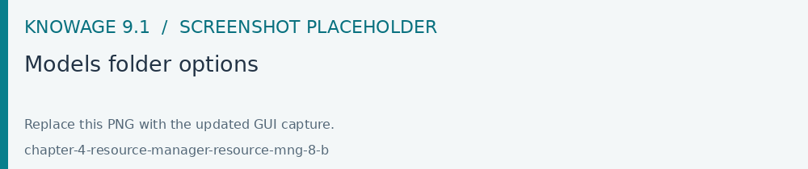
Fig. 701 Models folder options
Metadata management
The Metadata option opens a GUI where the user can define the metadata information for the model, into the specific see image below:
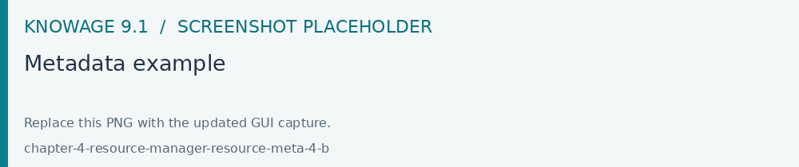
Fig. 702 Metadata example